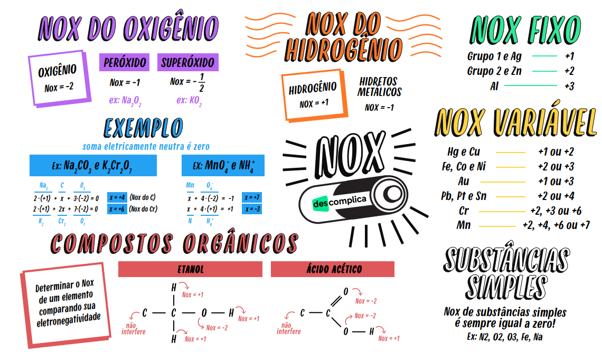

Lei de Henry
Fórmula: C = k · P
Descrição: A quantidade de gás dissolvido em um líquido é diretamente proporcional à pressão do gás sobre o líquido, a temperatura constante.
Onde:
- C = concentração do gás dissolvido
- k = constante de Henry (depende do gás e do solvente)
- P = pressão parcial do gás
💡 Exemplo de aplicação:
Em refrigerantes, o gás CO₂ é dissolvido sob alta pressão. Ao abrir a garrafa, a pressão diminui e o gás escapa, formando bolhas — um exemplo prático da Lei de Henry.
Cálculo de NOx (Número de Oxidação)
NOx indica a carga elétrica aparente que um átomo possui em um composto químico.
Regras básicas:
- Elementos isolados têm NOx = 0 (ex: O₂, N₂, Na).
- Íons simples têm NOx igual à carga (ex: Na⁺ → +1, Cl⁻ → -1).
- O oxigênio geralmente tem NOx = -2.
- O hidrogênio geralmente tem NOx = +1.
💡 Exemplo:
Composto: NO₂
Sabendo que o oxigênio vale -2:
N + 2(-2) = 0 → N = +4
Logo, o NOx do nitrogênio em NO₂ é +4.
Mapa Mental de NOX
Resumo visual sobre calculo de NOX.
Agente Oxidante e Agente Redutor
Em reações de oxirredução (redox), há transferência de elétrons entre espécies químicas.
- Agente oxidante: é quem oxida o outro e se reduz (ganha elétrons).
- Agente redutor: é quem reduz o outro e se oxida (perde elétrons).
💡 Exemplo:
Reação: Zn + Cu²⁺ → Zn²⁺ + Cu
- Zn (0 → +2): perde elétrons → agente redutor.
- Cu²⁺ (+2 → 0): ganha elétrons → agente oxidante.